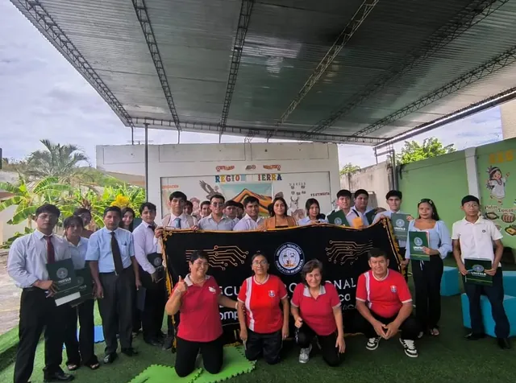

4.ªedición del Congreso Internacional de Investigación
6noticias y eventos recientes
100%enfoque intercultural

Una universidad que se viste de su gente
En Bagua, la educación superior se construye con la lengua, la historia y los saberes de las comunidades. Nuestro escudo une los colores de la región con la figura que representa nuestra raíz amazónica.
Conoce el campus, a nuestros estudiantes y las actividades que impulsan la investigación y la formación docente.
- Escudo de la UNIFSLB
- Educación Tecnológica, Computación e Informática
Noticias y eventos
Toca o presiona Enter sobre una imagen para verla en grande. Usa las flechas para pasar a la siguiente.
¿Quieres más información?
Encuentra la intranet, nuestras redes y el WhatsApp de la universidad.
Ir a contacto